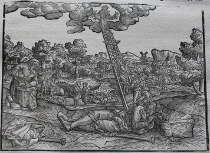

Home Quiz
Shadowland: Beginnings: Week 33
Genesis 28: Jacob's Ladder
Jacob is a type of Israel - and will be Israel. Unlike Esau, who
despised the birthright, Jacob valued it greatly, and strove to obtain it by
carnal means - as did the Pharisees. Jacob was exiled for his sin. - as was
Israel Jacob's seed will be "as the dust of the earth", but not "as the stars
of heaven" - as the covenant with Israel was an earthly covenant.

- 28:1 "and blessed him" - Isaac has accepted God's plan by faith.
- 28:7 Despite his deception, Jacob's example has prompted a half-step
of obedience from Esau. When northern Israel was exiled by
Assyria, God sent a plague of lions among the new inhabitants
of Samaria (there was only one Lion - but He was swift of
foot). 2 Kings 17:25-27 The Assyrians sent back some priests
of Israel to teach them how to serve the God of that country.
Despite Israel's sin and exile, the Samaritans learn to follow
Jehovah and recognize the Messiah when He comes. John 4
- 28:12 "angels ascending and descending" - John 1:51, the ladder is Christ.
- 28:14 "dust of the earth" as in Genesis 13:16, as compared to "stars of
the sky" In Genesis 15:5 and Daniel 12:3.
- 28:17 "the gate of heaven" - John 10, the gate is Christ.
- 28:19 "luz" means separation, but "bethel" means house of God.
- 28:20 God has already promised all these things to Jacob unconditionally,
and yet Jacob tries to bargain with God for them!
- 28:22 God did not require anything of Jacob for the promise, yet Jacob
adds to it human legalism.
Hebrews 2:2 - "and every transgression and disobedience received a just
recompence of reward". Jacob is deceived by Laban, and by the blood of goats
and the clothing of his favorite son. Pharaoh drowns the Hebrew male children,
and the Egyptian male children drown in the Red Sea. Haman builds a gallows
for Mordecai, and is himself hanged upon it. Saul participated in the stoning
of Stephan (who had not broken any law) - and was himself stoned.